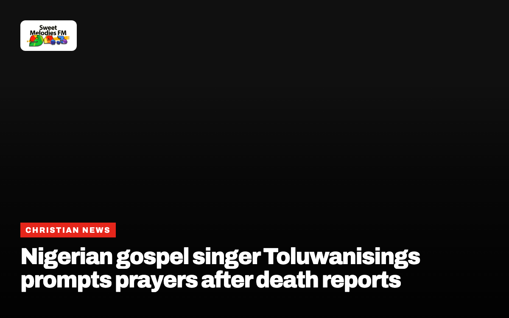

Christian News

Pope Leo XIV to undergo surgery in Rome for lung nodule
The 71-year-old leader of the Catholic Church will enter hospital on Tuesday after doctors found a small lesion during a checkup.
Christian NewsAgyinasare cautions Ghanaians against culture of lies
The Christian leader says dishonesty has turned into a regular habit for many people across the country.
Christian NewsDavido praises John Mahama after church video goes viral
The Nigerian musician commended the Ghanaian leader’s humility after watching a trending video of him dancing in church.
Christian NewsPope Leo XIV to undergo lung surgery in Rome
Catholic leader Pope Leo XIV confirms doctors caught a lung growth early and expects to recover within a week.
Christian NewsCuban authorities arrest Protestant pastor over public prayer event
Human rights group Christian Solidarity Worldwide calls for the release of Maikel Pupo Velázquez while his teenage daughter remains in hospital.
Christian NewsGhana hosts 10th World Assemblies of God Congress in Accra
More than 10,000 global delegates gather in Greater Accra as Africa hosts the church’s triennial world meeting for the first time.
Christian NewsPepperdine University adopts new faith statement clarifying Christian beliefs
The California institution has detailed its theological positions on God, Scripture and grace following unanimous approval from its governing board.

Nigerian gospel singer Toluwanisings prompts prayers after death reports
Fans and Christian communities across West Africa offer prayers following unverified reports regarding gospel artist Toluwanisings.
Christian NewsChurches of all sizes can engage young adults, research indicates
Research covering over 11,000 assemblies indicates local fellowships can adopt realistic methods to engage younger generations despite negative trends.
Christian NewsWest Bank Christian family flees Taybeh home after settler beheading threat
An advocacy group calls for international intervention after intimidation forces a Palestinian Christian family from their newly built Taybeh house.
Christian NewsBishop Obinim denies arrest and threat claims as divorce dispute grows
The founder of International God’s Way Church has publicly rejected allegations that he threatened his estranged wife, gospel musician Florence Obinim.
Christian NewsAssemblies of God Leaders Visit President Mahama Ahead of World Congress
The church relocates its morning sessions in Accra to the Grand Arena as Ghana hosts the global gathering for the first time.
Christian NewsErie Church Leaders Pledge Support After Grandfather Kills Eight Relatives
Faith leaders in Pennsylvania offer spiritual guidance following a house shooting that left nine people dead.
Christian NewsSaudi-born evangelist Ahmed Joktan urges Christians to share Gospel
Former Muslim Ahmed Joktan calls on believers to witness to their neighbors after experiencing a dream that transformed his life.
Christian NewsChristian Post Responds to Holy Post Over Christian Nationalism Claims
The conservative news outlet says it has offered critical commentary on the political Right for years.
Christian NewsHealth concerns grow for jailed Chinese Pastor Wang Yi
Reports indicate the Early Rain Covenant Church leader suffers from late-stage liver cancer while officials arrest congregants.
Christian NewsUS Archbishop Urges Catholic Soldiers To Refuse Firing Squad Execution Duty
Archbishop Timothy Broglio says Catholic military members must ask to be excused from the planned December 3 execution of Nidal Hasan.
Christian NewsGhana offers diplomatic support for Assemblies of God world congress
Missions in 73 countries will assist international delegates arriving in Accra for the global gathering this week.
Christian NewsChristian leaders divided over plan to livestream Fort Hood shooter execution
Prominent pastors respond to Pentagon proposals to broadcast the firing squad execution of convicted killer Nidal Hasan.
Christian NewsCabinet approves Ghana diplomatic agreement with Holy See
The host country agreement will go to Parliament to define formal relations and privileges for Catholic leaders.
Christian NewsChristian Post highlights key anniversaries in church history this week
The publication recalled major events including the founding of Willow Creek Community Church, the Knights Templar arrests and Henry Martyn’s death.
Christian NewsJimmie Allen features on new Halfway 2 Jesus gospel album
International Business Times UK reported that a MAGA singer defended Eminem while launching a gospel music project featuring Jimmie Allen.
Christian NewsPresbyterian Church inducts Rev David Obli as Ga West Chairperson
The Moderator of the General Assembly has challenged the new leader to achieve ten per cent annual membership growth.
Christian NewsPray.com launches AI sermon video service for pastors
Churches can now convert sermon messages into cinematic videos using artificial intelligence technology.
Christian NewsMinisters urge Kansas Senate candidate Adam Hamilton to drop out and repent
Clergy have publicly asked the United Methodist Church pastor to exit the race over his theological positions.
Christian NewsUS police arrest pastor during prayer protest near Chinese embassy
The minister was demonstrating against the handling of minority faith groups in China when officers detained him in Washington.